Your 121GW, on every screen.
Readout connects to the EEVblog 121GW multimeter over Bluetooth and shows its display live on your iPhone, iPad, Mac or Windows PC. Press its buttons from across the bench, log every reading and keep the graphs.
Coming to the App Store. Free and open source (MIT).
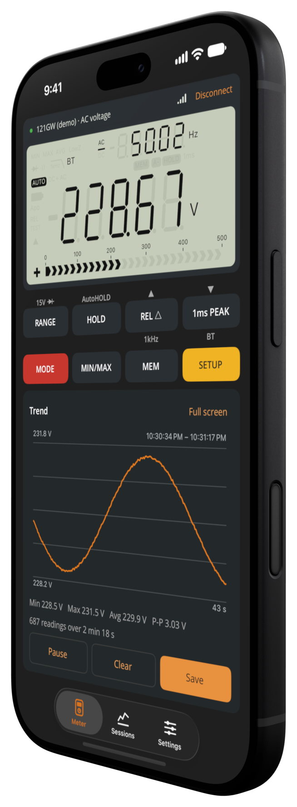
What it does
Everything you'd want from a meter's app, and nothing you didn't ask for.
Live display
A faithful drawing of the 121GW's LCD: main and secondary readings, units, the bar graph and every symbol.
Remote buttons
All eight buttons, labeled as on the meter. Tap for a short press, hold for a long one.
Logging and graphs
Every reading is logged while connected, with min, max, average and peak-to-peak. Pinch to zoom.
Saved sessions
Name a recording, add notes, and export it as CSV in SI units for a spreadsheet.
Continuity beep
Your phone beeps and buzzes below a threshold you choose, with no chatter.
Works with Claude
On Mac and Windows, an optional local MCP server lets an AI assistant read the meter. How it works.
Demo meter
No meter at hand? A simulated one shows every feature.
Private
No account, no analytics, no tracking. Readings stay on your device.
Screenshots
Light and dark, portrait and landscape, phone, tablet and desktop.
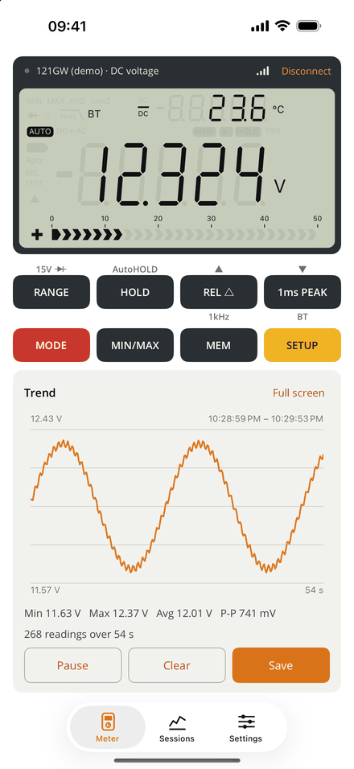
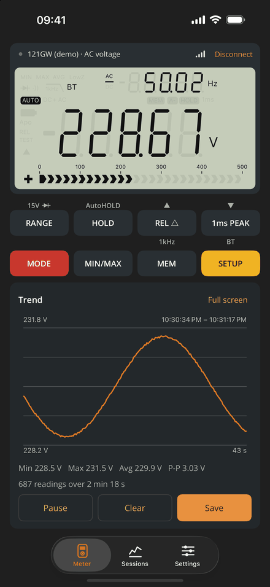
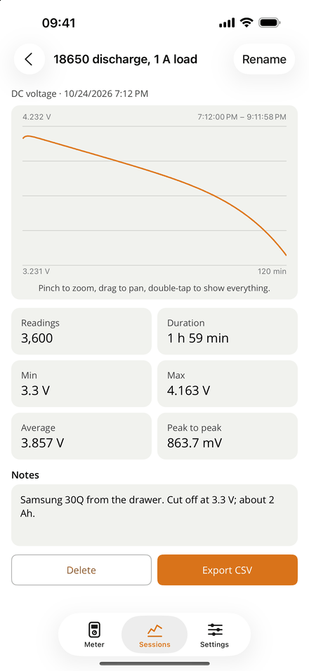
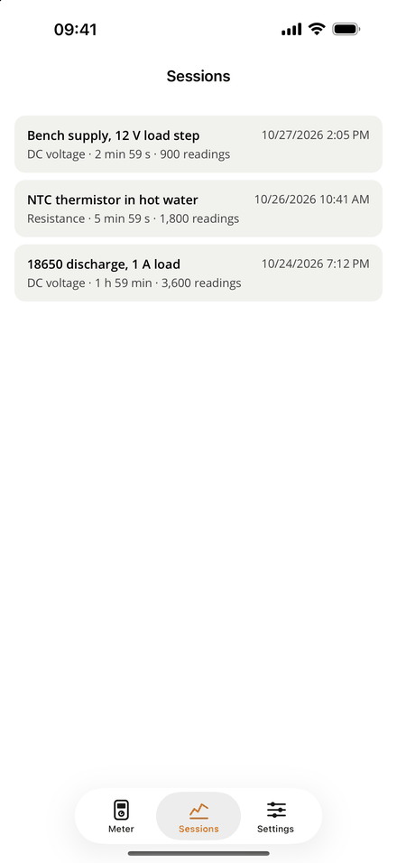
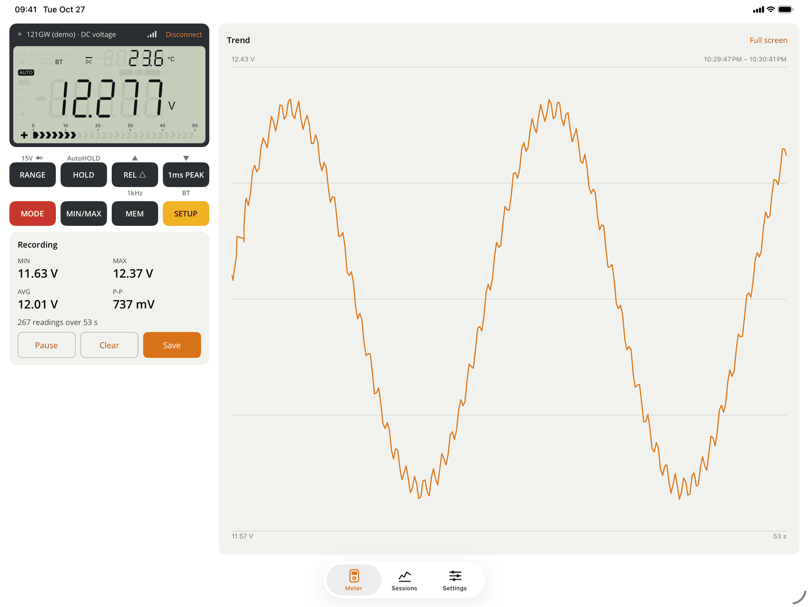
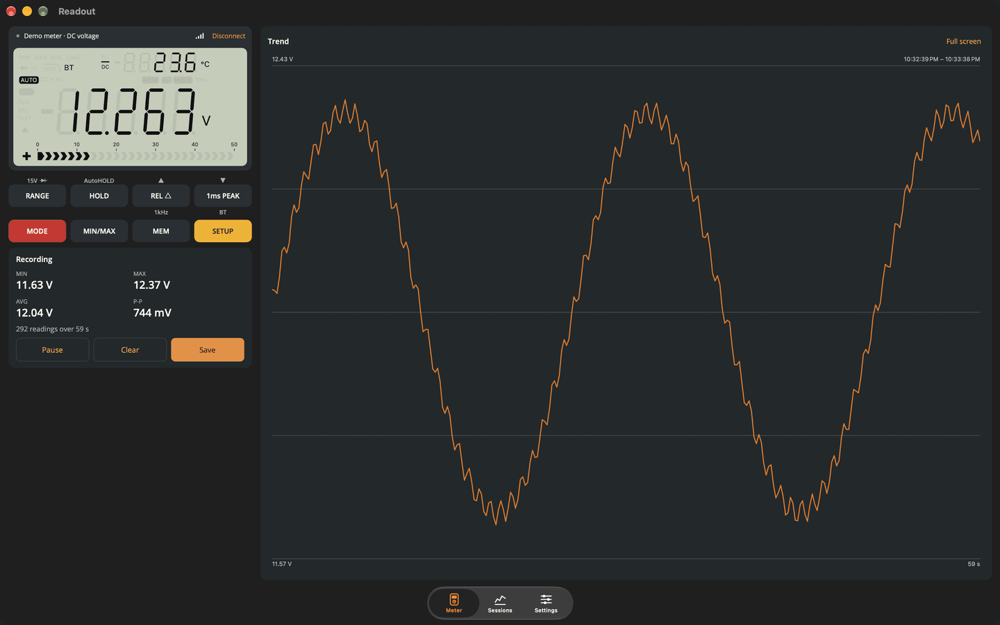
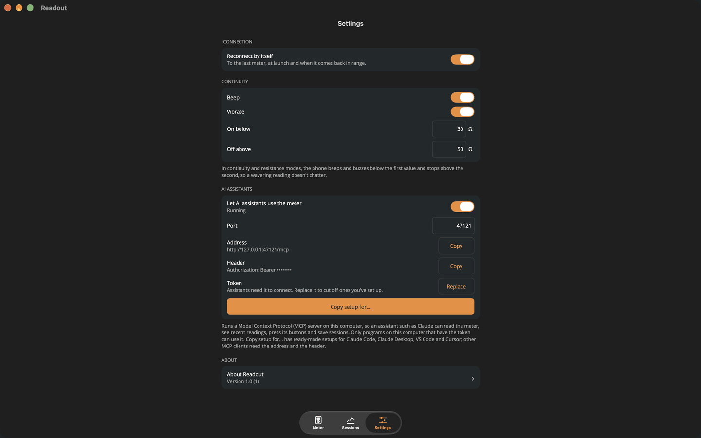
Windows
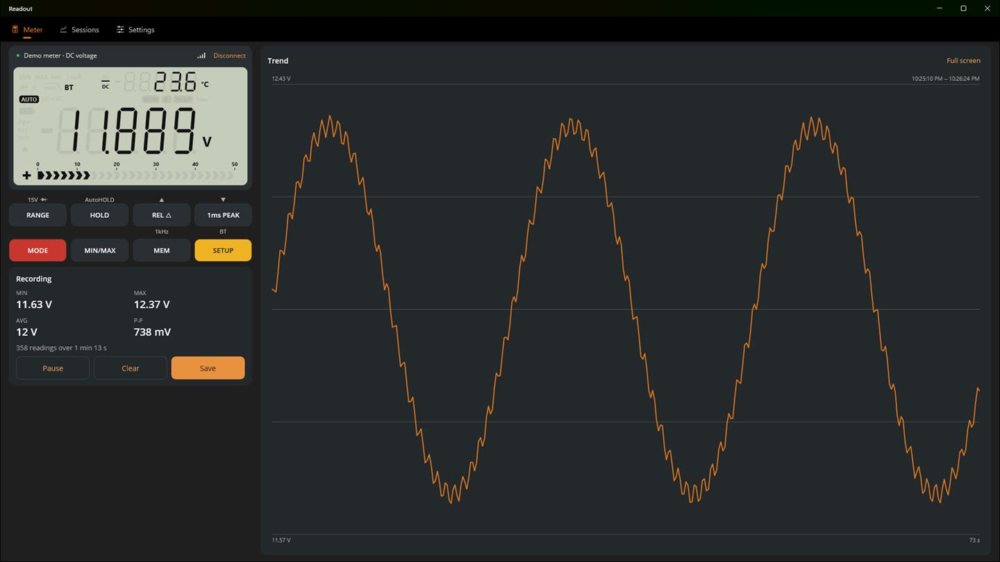
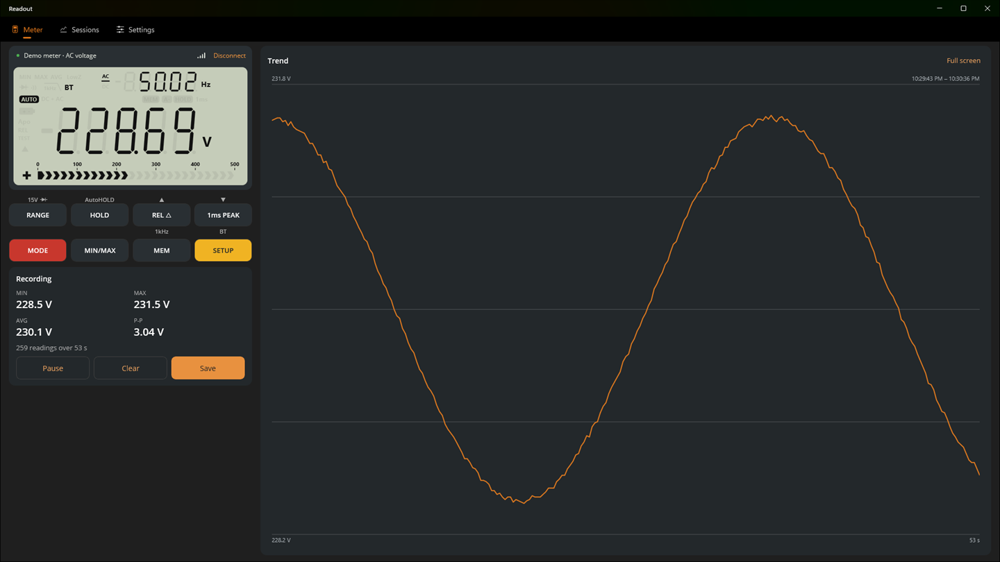
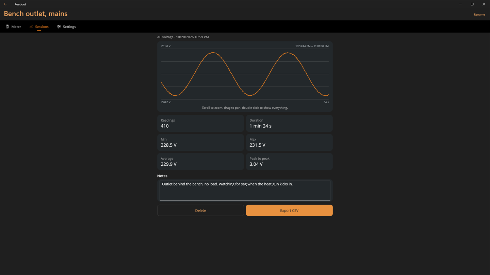
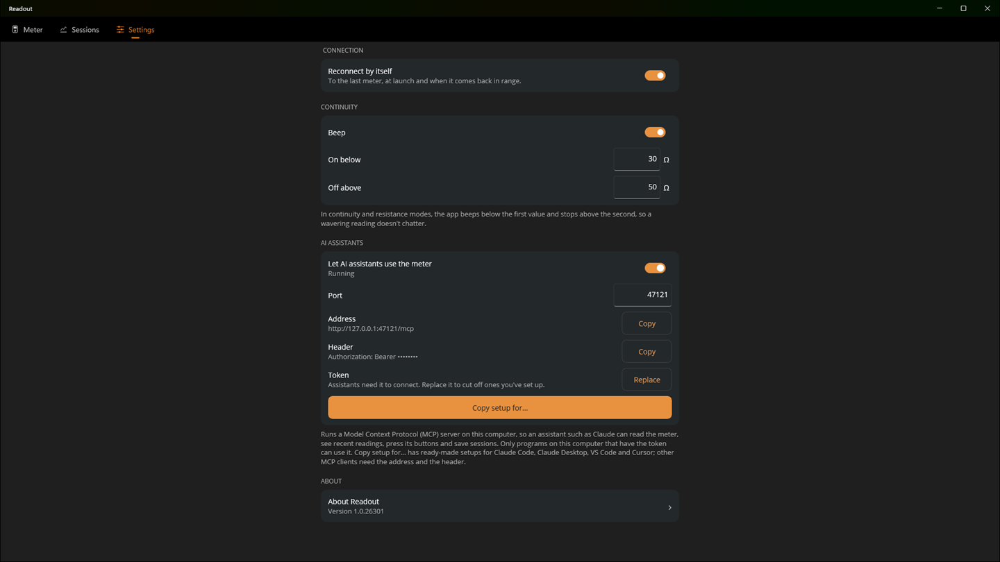
Links
- EEVblog 121GWThe meter, from the EEVblog store
- 121GW manualLinked from the product page, with firmware updates
- Source codeThe whole app, MIT licensed
- Bluetooth protocolHow the 121GW talks, documented
- Using it with ClaudeSetup for Claude Code, Claude Desktop, VS Code and Cursor
- SupportQuestions, connection help, bug reports
- Privacy policyNo data collected